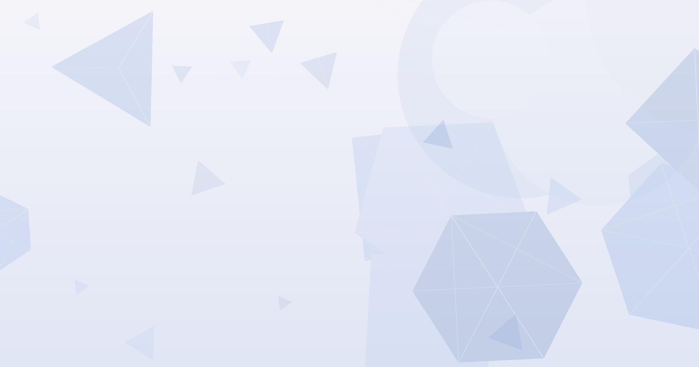
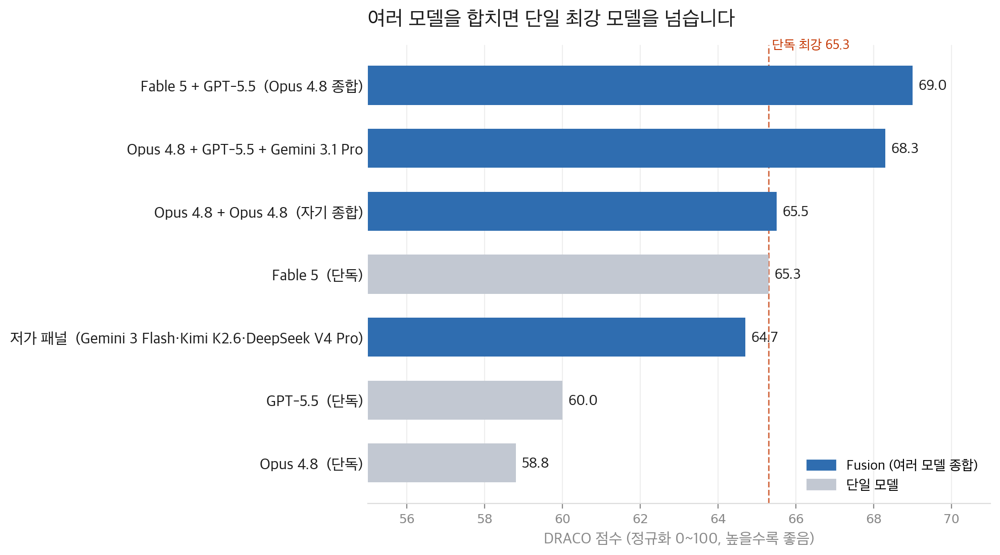
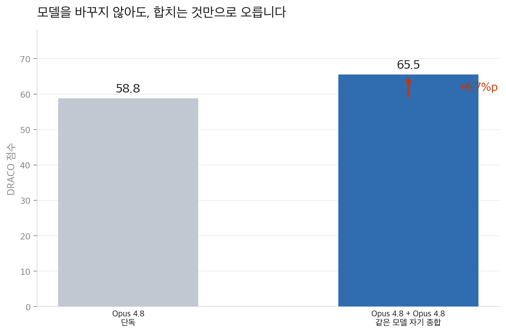

OpenRouter가 여러 AI 모델의 답을 종합하는 도구 Fusion을 공개했습니다. 패널 모델들이 답을 내면 심판 모델이 하나로 합칩니다.
딥리서치 벤치마크에서 두 모델을 합친 결과가 가장 강한 단일 모델을 넘었습니다. 저가 모델 패널은 절반 비용으로 프런티어 모델을 이겼습니다.
핵심은 모델 다양성입니다. 서로 다른 관점을 합치면 더 나은 답이 나옵니다. 사람의 팀이 일하는 원리와 같습니다.
어떤 AI 모델이 가장 강한지 비교하느라 시간을 쓰고 계십니까?
정답은 '하나를 고르지 않는 것'일 수 있습니다.
대부분의 조직은 "어떤 AI를 표준으로 쓸까"를 고민합니다. 가장 똑똑한 모델 하나를 고르는 문제로 봅니다. 그런데 이번 실험은 반대를 가리킵니다.
OpenRouter가 여러 모델의 답을 합치는 Fusion을 공개했습니다. 딥리서치 100개 과제에서 Fable 5와 GPT-5.5를 합친 결과가 69.0%를 기록했습니다. 단독 최강 모델 Fable 5의 65.3%를 넘었습니다.
더 흥미로운 건 비용입니다. 저렴한 모델 3개를 묶은 패널이 프런티어 모델을 이기면서 비용은 절반이었습니다. "한 대신 여러 대"가 더 싸고 더 정확했습니다.
AI 모델 경쟁이 1위 자리 다툼으로 굳어지고 있습니다. 기업은 매번 가장 좋은 모델로 갈아타며, 모델 하나에 업무를 몰아줍니다.
이번 결과는 그 전제를 흔듭니다. 성능이 모델 하나의 우수함이 아니라 여러 관점의 종합에서 나왔기 때문입니다. 같은 모델을 둘로 합쳐도 점수가 6.7%p 올랐고, 합치는 과정 자체가 성능을 만들었습니다.
첫째, 패널이 단일 모델을 일관되게 이겼습니다. OpenRouter는 Perplexity의 딥리서치 벤치마크 DRACO 100개 과제로 측정했습니다. Fable 5와 GPT-5.5를 합쳐 Opus 4.8이 종합한 결과가 69.0%로 1위였습니다. 어떤 단일 모델보다 높았습니다.

둘째, 저가 모델을 묶으면 프런티어 모델을 넘습니다. 저렴한 모델 3개를 묶은 패널이 64.7%를 기록했습니다. GPT-5.5와 Opus 4.8을 모두 이겼습니다. Fable 5와는 1%포인트 차이였습니다. 그러면서 비용은 Fable 5의 절반이었습니다.
비용을 절감하면 품질이 떨어진다는 통념을 뒤집습니다. 묶는 방식에 따라 더 싸면서 더 정확한 구간이 존재합니다.
셋째, 종합하는 단계 자체가 성능을 만듭니다. Opus 4.8을 둘로 묶어 Opus 4.8이 종합한 결과가 65.5%였습니다. 단독 Opus 4.8의 58.8%보다 6.7%포인트 높았습니다. 같은 모델인데도 점수가 올랐습니다.
같은 질문을 두 번 던지면 다른 추론 경로, 다른 검색, 다른 출처가 나옵니다. 그 차이를 종합하는 과정에서 품질이 올라갑니다. 모델을 바꾸지 않아도 일하는 방식만으로 결과가 달라진다는 뜻입니다.

넷째, 이것은 사람 팀의 원리와 같습니다. OpenRouter는 그 이유를 모델 다양성으로 설명합니다. 서로 다른 관점을 복잡한 문제에 가져오면 더 나은 결과가 나옵니다. 사람으로 구성된 팀의 성과와 같은 원리입니다.
한 사람의 천재보다 관점이 다른 팀이 낫다는 경험칙이 AI에도 적용됩니다. 작동 방식은 단순합니다. 패널 모델이 각자 답을 내면, 심판 모델이 합의점, 모순, 누락, 고유한 통찰을 정리합니다. 마지막에 그 분석을 근거로 최종 답을 씁니다.
전략, 채용, 투자 같은 고가치 질문은 ChatGPT, Claude, Gemini에 동일한 프롬프트를 넣습니다. 세 답을 나란히 비교하는 것만으로 사각지대가 줄어듭니다. (20분)
세 답을 모은 뒤 AI 한 곳에 심판 역할을 맡깁니다. Fusion의 작동 방식을 그대로 따라 하는 것입니다. (10분)
아래는 같은 질문에 대한 세 개의 AI 답변입니다. 세 답변을 비교해서 다음을 정리해 주세요. 1. 모두가 동의하는 합의점 2. 서로 모순되는 지점 3. 한 곳만 언급한 고유한 통찰 4. 세 답변 모두 놓친 빈틈 그다음 이 분석을 근거로 최종 결론을 작성해 주세요. 답변 A: [붙여넣기] 답변 B: [붙여넣기] 답변 C: [붙여넣기]
여러 모델을 합치면 시간과 비용이 2~3배 듭니다. 모든 질문에 쓰면 낭비입니다. 한 번 틀리면 비용이 큰 결정에만 선택적으로 적용하십시오. 질문 유형을 두 줄짜리 기준으로 정해 팀에 공유하십시오. (30분)
느리고 비쌉니다. 여러 모델에 동시에 묻고 종합하는 과정은 단일 호출보다 2~3배 깁니다. 모든 질문에 적용하면 오히려 손해입니다. 답의 정확도가 비용을 정당화하는 질문에만 써야 합니다.
벤치마크 하나의 결과입니다. DRACO는 영어, 텍스트 전용의 딥리서치 과제만 측정합니다. OpenRouter도 코딩이나 장기 과제에는 검증되지 않았다고 밝혔습니다. 모든 업무로 일반화하기엔 이릅니다.
누가 종합하느냐가 점수를 좌우합니다. 심판 모델을 무엇으로 두느냐에 따라 점수가 10~25점까지 출렁입니다. 종합 역할의 모델 선택이 결과를 크게 바꿉니다.
코딩 도구의 대체재는 아닙니다. OpenRouter는 Fusion이 코딩 모델을 대신하지 않는다고 명시했습니다. 일상 작업은 기본 모델이 처리하고, 깊은 답이 필요한 순간에만 선택적으로 부르는 도구입니다.
가장 강한 AI 하나를 고르는 일에 매달리지 마십시오. 서로 다른 관점을 합치고 종합하는 방식이 더 싸고 더 정확할 수 있습니다.
Fusion: OpenRouter가 공개한 다중 모델 종합 도구입니다. 여러 모델에 같은 질문을 보내고, 심판 모델이 답들을 하나로 합칩니다. 한 번의 호출로 여러 모델의 장점을 모읍니다.
패널과 심판 모델: 패널은 각자 답을 내는 참여 모델들입니다. 심판 모델은 그 답들을 읽고 합의점과 모순, 빈틈을 정리해 최종 답의 근거를 만듭니다.
DRACO: Perplexity가 만든 딥리서치 벤치마크입니다. 학술, 금융, 법률, 의료 등 10개 분야의 100개 과제로 구성됩니다. 과제마다 약 39개의 채점 기준이 있고, 틀린 정보에는 감점을 줍니다.
프런티어 모델: 당대 최고 성능으로 평가받는 최상위 AI 모델입니다. 보통 가장 비쌉니다. 이번 글에서는 Fable 5, Opus 4.8, GPT-5.5가 여기에 해당합니다.
- Thomas, B. (2026, June). Surpassing Frontier Performance with Fusion [Article]. OpenRouter. (원문 보기 ↗)